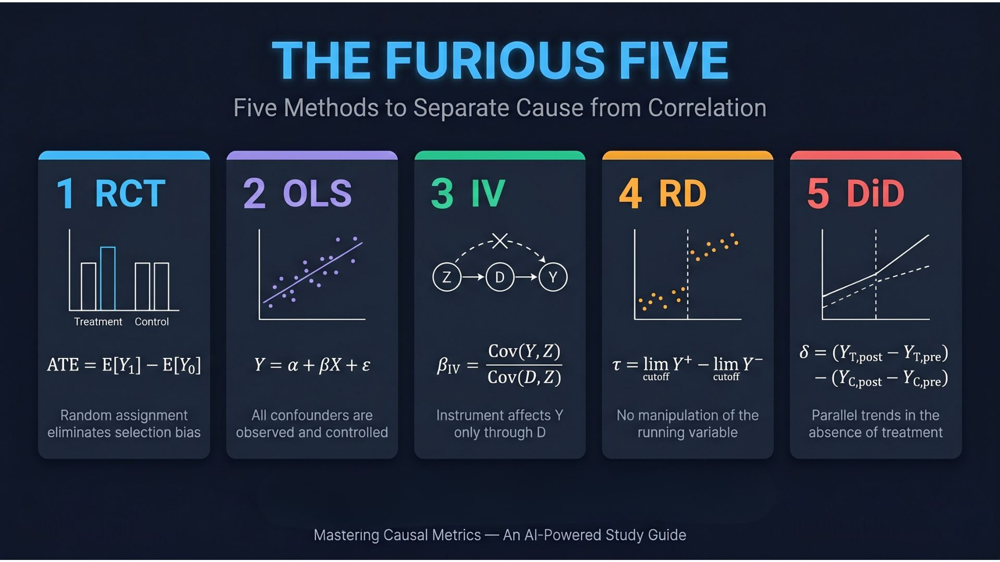
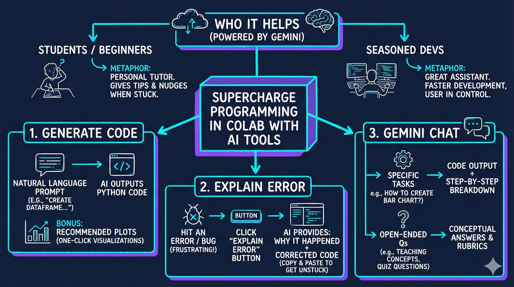
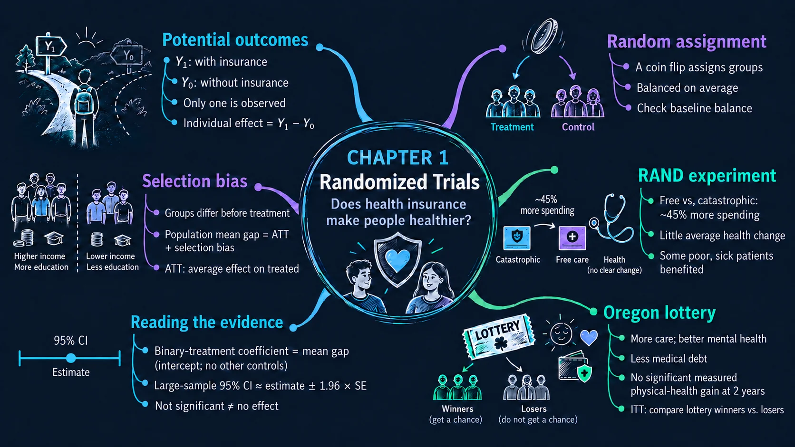
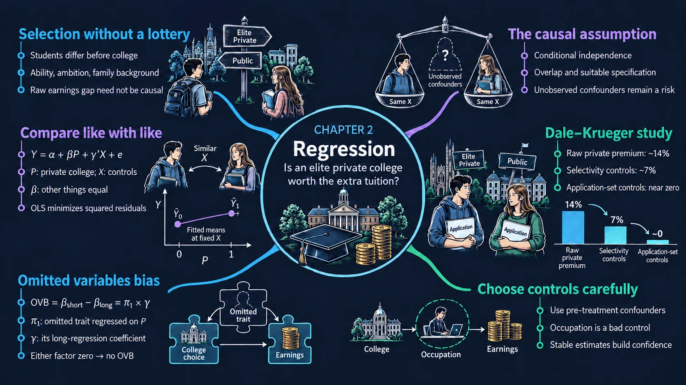
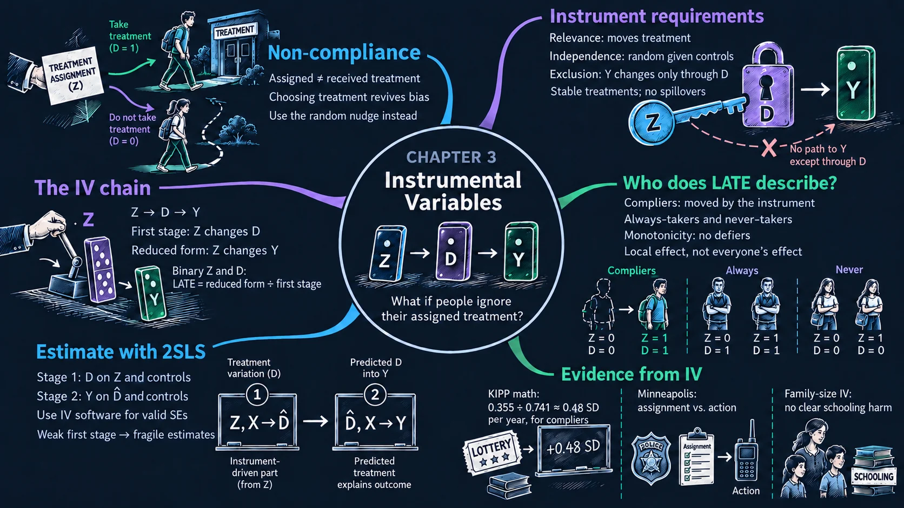
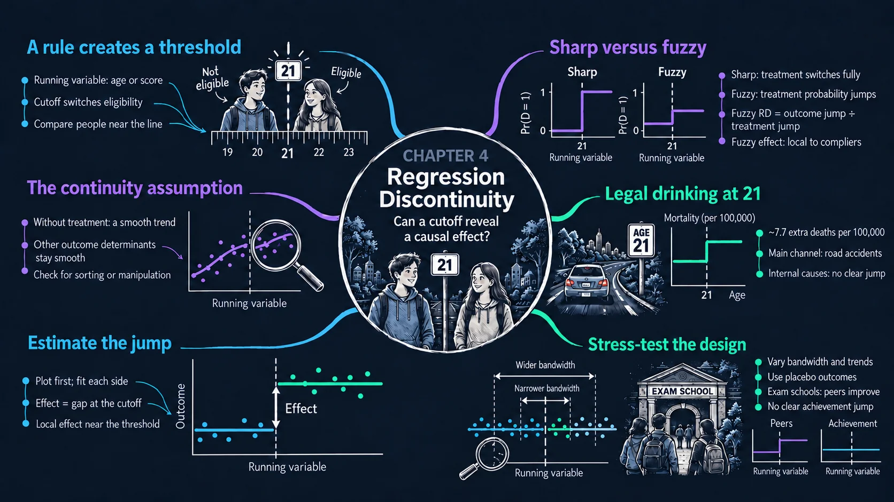
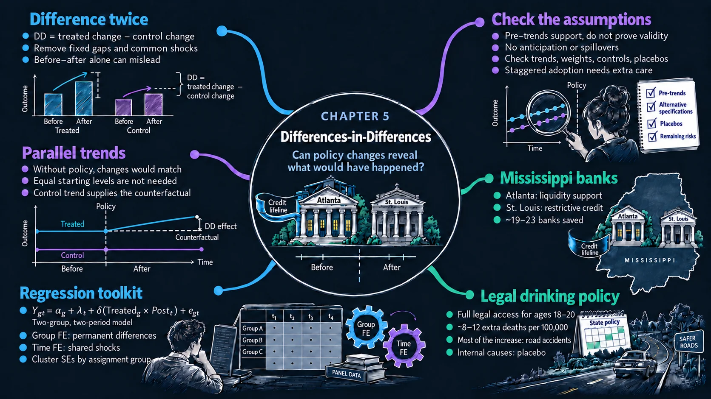
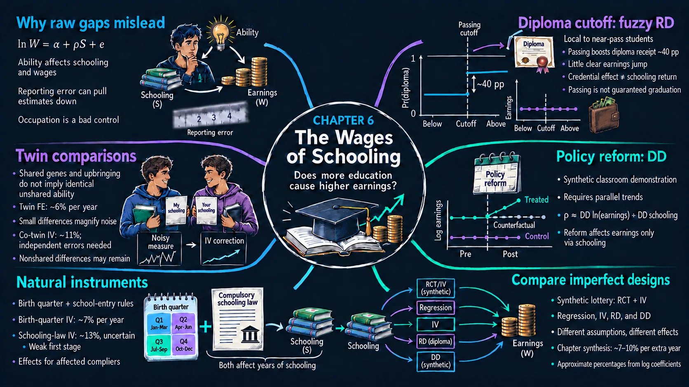

Press Esc or click outside to close
_
A hands-on AI-powered study guide to Mastering Causal Metrics. Learn the foundations of causal inference with interactive Python notebooks and AI tools.

Based on Mastering 'Metrics by Angrist & Pischke. Learn causal inference from randomized trials to differences-in-differences.
Zero-installation Google Colab notebooks. Real datasets, working code, and complete implementations of every method.
Multiple AI tutors with distinct pedagogical styles.
Every chapter comes with a Google Colab notebook that replicates the book's causal estimates in Python with pyfixest. Colab's built-in AI tools generate code, explain errors, and guide you through each regression, so you can focus on the identification strategy behind every result.

Video source: Julianne DeMars-Smith and Key Jung Lee from Google Research
Six chapters on the five tools of causal inference. Click a badge to open the study guide or launch the notebook in your browser. Each card also links to lecture slides and videos. Listen to the podcasts for all six chapters: jump between sections and follow the transcript as you listen.
Selection Bias · Potential Outcomes · RAND HIE

AI podcast · 39 min
Now: Opening
OLS · Omitted Variable Bias · Bad Controls

AI podcast · 40 min
Now: Opening
LATE · Compliers · Minneapolis DV Experiment

AI podcast · 35 min
Now: Opening
Sharp RD · Bandwidth · MLDA and Mortality

AI podcast · 35 min
Now: Opening
Parallel Trends · Two-Way FE · Great Depression Banking

AI podcast · 32 min
Now: Opening
Twins · Quarter of Birth · Sheepskin Effects

AI podcast · 46 min
Now: Opening
Podcasts narrated with Gemini · AI videos generated with NotebookLM · Lecture videos by Marginal Revolution University
Curated materials to deepen your causal inference toolkit
Found an error in the notebooks, study guide, or AI materials? Your feedback helps make this project better for everyone. Please open an issue on GitHub describing what you found, and we'll work to fix it.
🐞 Submit an Issue on GitHubVideo by Marginal Revolution University · Press Esc or click outside to close
Press Esc or click outside to close